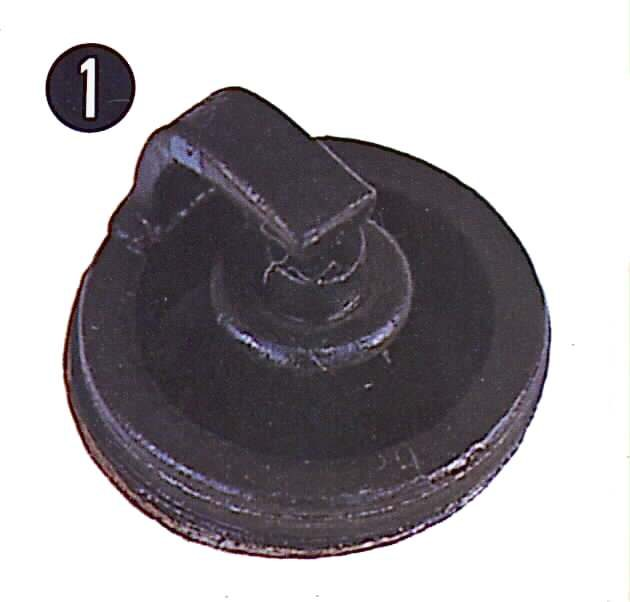
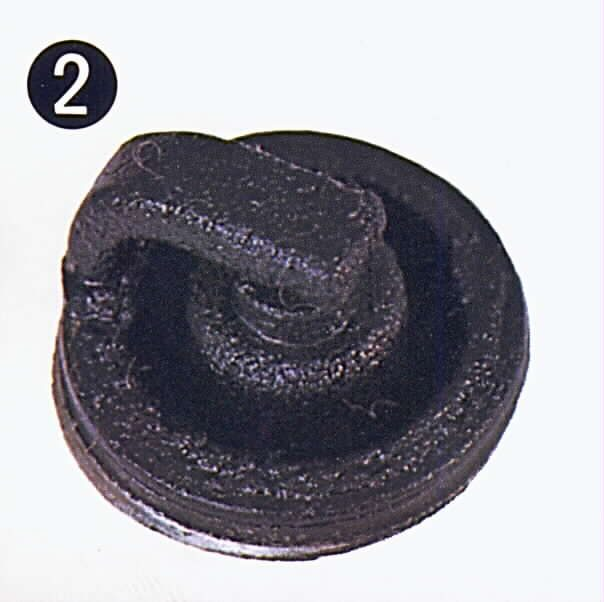

The plug comes out wet, black and oily, and smells of oil rather than petrol. Oil is getting into the combustion chamber and burning there. On a four-stroke it comes past worn piston rings, past worn valve guides or valve stem seals, from an overfilled sump, or through the breather into the air box. On a two-stroke, oil is mixed with the fuel by design, so too much oil (wrong premix, oil pump set too high) or a leaking crank seal gives an oily plug. Oily plugs often come with blue smoke.
Is it safe to ride?
With care. Carry a spare plug. Check the oil level often: an engine burning oil can run low. Stop if smoke is heavy or the oil warning light comes on.
Quick checks first
- Is the plug wet with oil (slippery, does not evaporate) or with fuel (evaporates, smells of petrol)? Fuel: see Engine is flooded and smells of fuel.
- Check the oil level: is it above the upper mark?
- Is there oil in the air box or on the air filter?
- Blue smoke from the exhaust? When: on start-up, under load, or when closing the throttle?
- Two-stroke: what premix ratio or oil pump setting is used?
Diagnose it step by step
1Is the oil level above the upper mark?
- Yes: drain to the correct level. The K-Light 125 fault chart lists oil above the upper mark as a smoke cause (PDF page 29). See Too much oil in the engine and Check the engine oil level.
- No: go to step 2.
2Is there oil in the air box or on the air filter?
- Yes: the crankcase breather is passing oil, often a sign of blow-by. Check the crankcase breather.
- No: go to step 3.
3Two-stroke: is the premix or oil pump setting right?
- No: correct it to your manual. Pump faults: Check the two-stroke oil pump and lines.
- Yes, or four-stroke: go to step 4.
4Do a dry and then a wet compression test. Is compression low dry and much higher wet?
- Yes: worn rings or cylinder (MAVCC wet test logic). Test engine compression.
- Compression normal: oil is probably coming past the valve guides or stem seals. Blue smoke after idling or on start-up supports this. Go to step 5.
5Have a workshop confirm with a leak-down test and inspect the top end.
Fit a new plug of the correct type after each test so you can see whether the problem returns.
Causes, most likely first
| Cause | How to confirm | Fix |
|---|---|---|
| Oil overfilled | Level above upper mark | Check the engine oil level |
| Too much two-stroke oil | Premix or pump setting | Check the two-stroke oil pump and lines |
| Breather passing oil | Oil in air box | Check the crankcase breather |
| Worn valve guides or stem seals | Smoke on start-up; normal compression | Assess the top end (cylinder, piston, valves) |
| Worn rings or cylinder | Wet test raises compression a lot | Test engine compression |
Reference values (K-Light 125)
| Item | Value | PDF page |
|---|---|---|
| Compression pressure | 1.0 to 1.2 MPa | 60 |